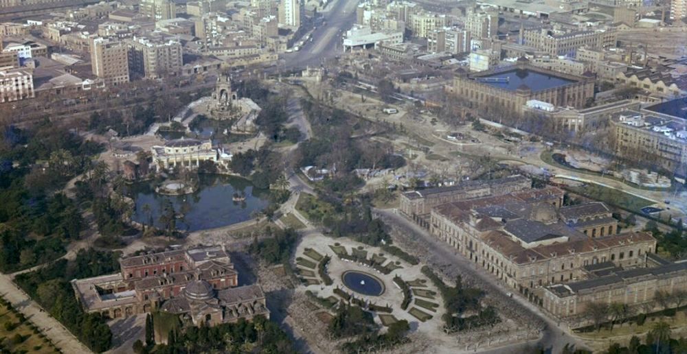
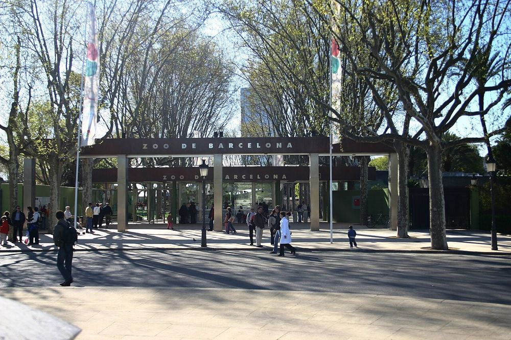
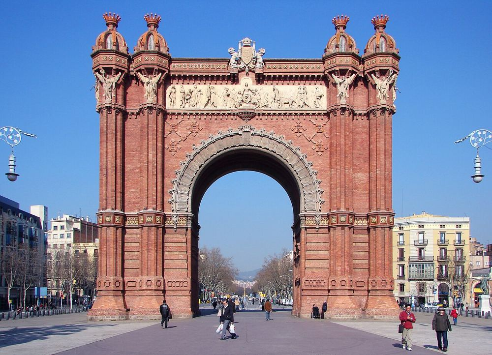
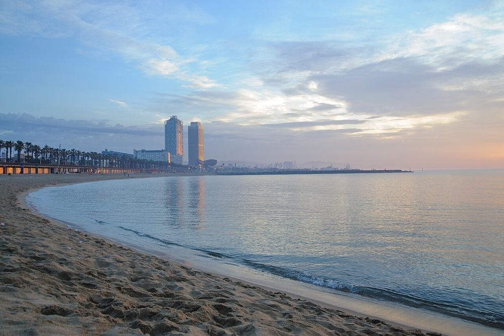
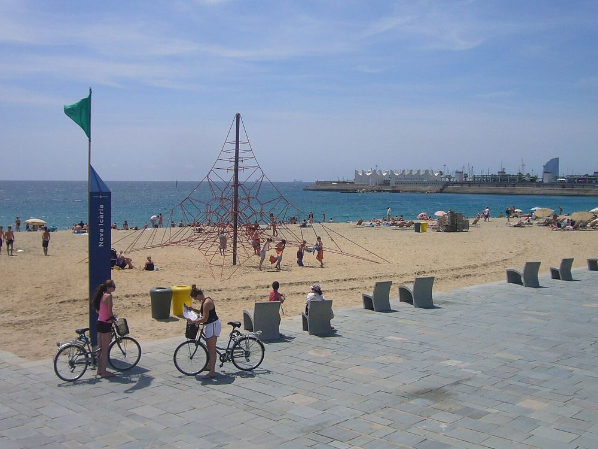
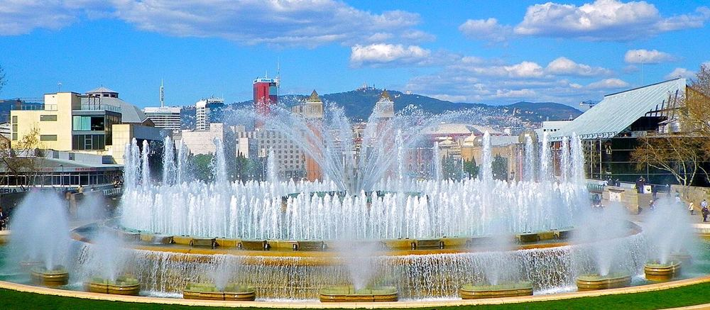
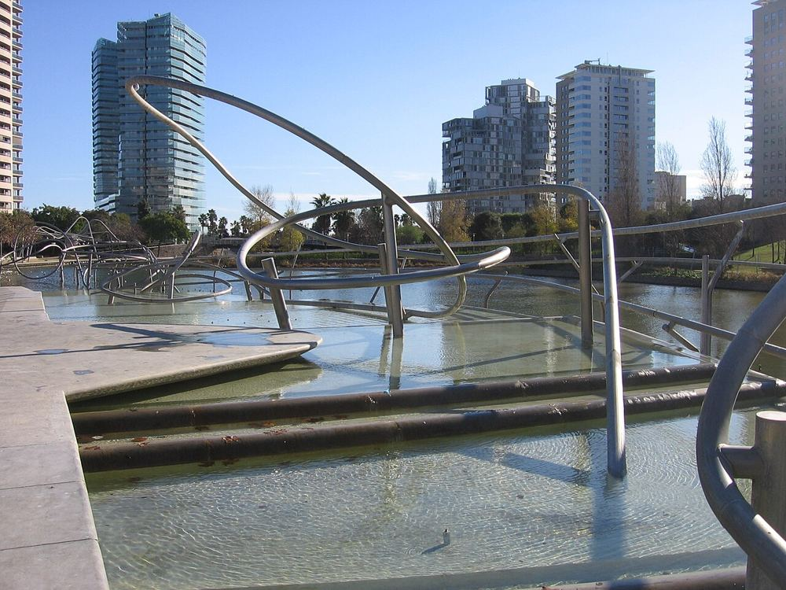

Photo : Paul Hermans · CC BY-SA 3.0 0–17 ans
L'Aquàrium de Barcelona
Environ 2 h · Vieille ville et port
Couvert Poussette OK
Le tunnel sous les requins fait l'unanimité de 2 à 12 ans. Arrivez à l'ouverture : l'affluence monte vite en fin de matinée et le week-end.
Moll d'Espanya del Port Vell, s/n, 08039 Barcelona

Photo : SACE (Servicios Aéreos Comerciales… · CC BY 1.0 0–17 ans
Parc de la Ciutadella
Environ 1 h 30 · Ciutadella et Barceloneta
Plein air Gratuit Poussette OK
Le grand parc vert du centre : aires de jeux, pelouses, cascade monumentale et barques sur le lac. Parfait pour une pause ou un pique-nique.
Passeig de Picasso, 21, 08003 Barcelona

Photo : Josep Panadero · CC BY-SA 3.0 1–12 ans
Zoo de Barcelona
Environ 3 h · Ciutadella et Barceloneta
Plein air Poussette OK
Prévoyez une demi-journée. Allées plates, très praticables en poussette. À éviter aux heures les plus chaudes de l'été.
Parc de la Ciutadella, s/n, 08003 Barcelona

Photo : Bajajvikram · CC BY-SA 3.0 0–17 ans
Arc de Triomf et Passeig de Lluís Companys
Environ 30 min · Ciutadella et Barceloneta
Plein air Gratuit Poussette OK
Grande promenade piétonne où les enfants peuvent courir, souvent animée par des artistes de rue. Elle mène directement au parc de la Ciutadella.
Passeig de Lluís Companys, 08018 Barcelona

Photo : Kuba Bożanowski from Warsaw, Poland · CC BY 2.0 0–17 ans
Plage de la Barceloneta
Environ 2 h · Ciutadella et Barceloneta
Plein air Gratuit Poussette possible
La plage la plus proche du centre, donc la plus fréquentée. Les jeux pour enfants installés le long de la promenade sont un bon complément.
Passeig Marítim de la Barceloneta, 08003 Barcelona

Photo : Jordiferrer · CC BY-SA 3.0 0–17 ans
Plage de la Nova Icària
Environ 2 h · Front de mer est (Fòrum)
Plein air Gratuit Poussette possible
Plus calme et plus familiale que la Barceloneta, avec une grande promenade plate pour les poussettes.
Passeig Marítim de la Nova Icària, 08005 Barcelona

Photo : jordi domènech · CC BY-SA 3.0 0–17 ans
Fontaine magique de Montjuïc
Environ 45 min · Montjuïc
Plein air Gratuit Poussette OK
Spectacle d'eau, de lumière et de musique en soirée, selon un calendrier saisonnier, parfois suspendu en période de sécheresse. Vérifiez qu'il a bien lieu avant d'y aller.
Plaça de Carles Buïgas, 1, 08038 Barcelona

Photo : Canaan · CC BY-SA 3.0 0–12 ans
Parc de Diagonal Mar
Environ 1 h · Front de mer est (Fòrum)
Plein air Gratuit Poussette OK
Grand parc moderne avec toboggans et bassins, à deux pas de la mer. Une pause tranquille loin de la foule du centre.
Carrer de Llull, 362, 08019 Barcelona